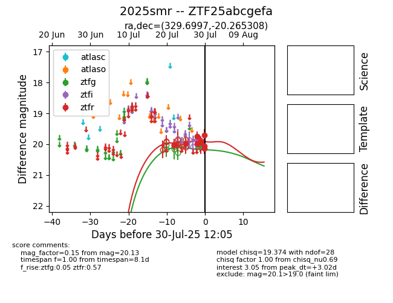

Target 2025smr at 2025-07-30 12:05, see:
FINK: fink-portal.org/2025smr
Lasair: lasair-ztf.lsst.ac.uk/objects/2025smr
ALeRCE: alerce.online/object/2025smr
TNS: wis-tns.org/object/2025smr
YSE: ziggy.ucolick.org/yse/transient_detail/2025smr
alt names
ZTF25abcgefa (ztf,fink)
2025smr (tns,yse)
coordinates:
equatorial (ra, dec) = (329.6997,-20.26531)
galactic (l, b) = (33.2681,-50.08105)
photometry
last ztfg=20.05, ztfr=20.13
2 ztfg, 8 ztfr detections
